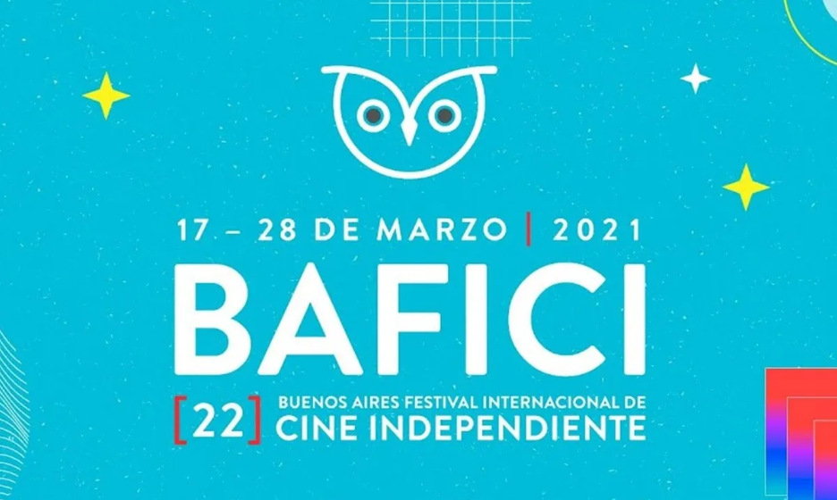

BAFICI 2021, en salas, al aire libre, online y gratis: conocé su programación
El mayor encuentro y uno de los festivales de Cine Independiente más grandes de América Latina realizará su nueva edición desde el 17 al 28 de marzo. Y éstas son las películas que proyectará.

BAFICI 2021, en salas, al aire libre, online y gratis | Foto: Afiche oficial